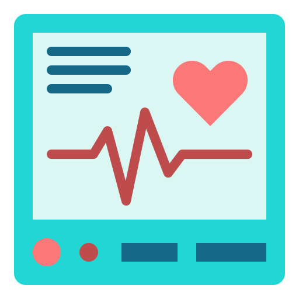

Heart Rate Monitor
Explore an innovative project merging home security and medical technology. Inspired by renowned devices like the Ring DoorBell Camera, Valeria and Alex collaborated to develop a comprehensive home security system and heart rate monitor. Leveraging advanced microcontroller technology, the system offers real-time surveillance, while the heart rate monitor provides vital health insights. Reflecting their dedication to impactful solutions, this project embodies a fusion of modern technology and practicality.